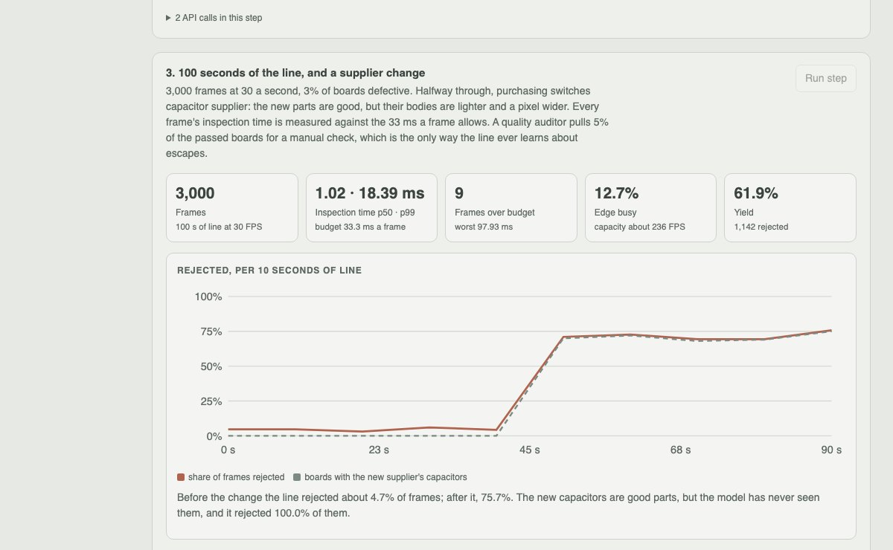
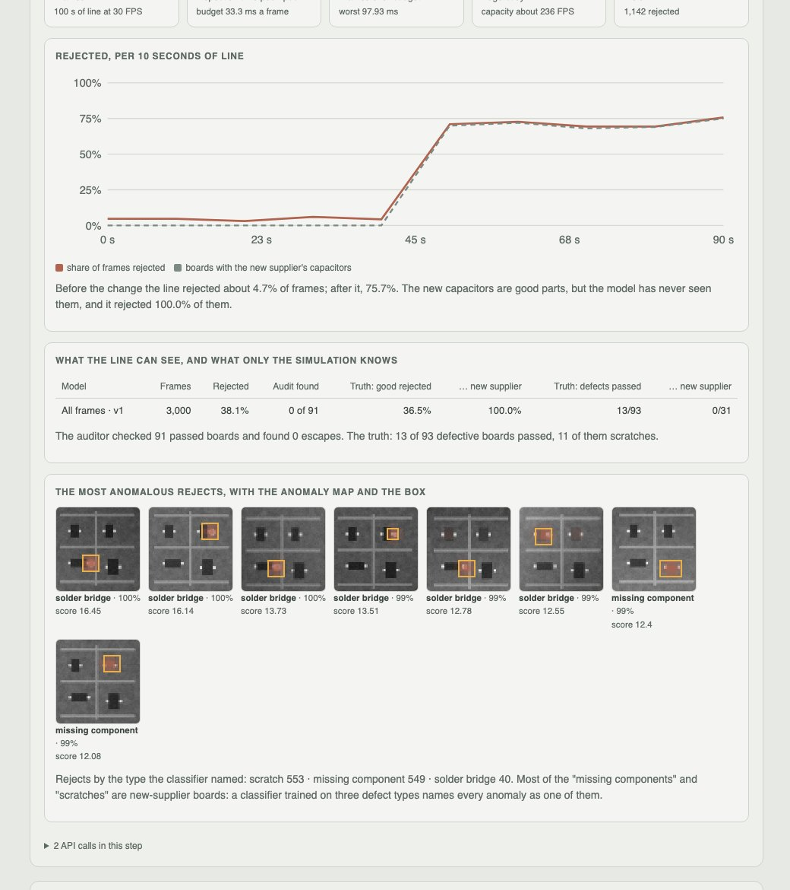
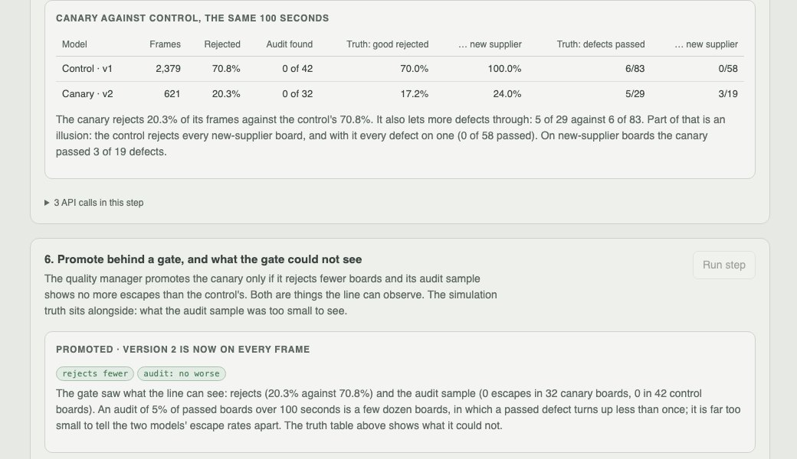

Python · anomaly detection · edge MLOps · 2026-10
What Does an Operator's "That Part Was Fine" Teach a Defect Camera?
A patch memory-bank anomaly model on an invented controller-board line at 30 FPS: it catches 17 of 24 labelled defects where a golden template catches 8, then rejects 100% of good boards when the capacitor supplier changes; 34 operator corrections bring that to 24.0%, and a canary passes a promotion gate that could not see its escapes rise.

Built from a written blueprint as one vertical slice. Every image is synthetic: boards, pouches and brackets, their defects and the lighting come from a generator in the repository, and the operator at the review station is a stand-in that labels from the truth with deliberate mistakes. Frames are 64 × 64 grayscale. No deep-learning framework and no language model is used. Not built: detection or segmentation networks, pretrained features, real cameras, high resolution, a real edge device, Kafka, Triton, single sign-on.
01 — The problem
An end-of-line camera has two ways to fail. It can pass a defective part (an escape, which reaches a customer) or reject a good one (a false reject, which costs money every minute and is the only failure anyone on the line sees). A new line starts with plenty of good parts and very few labelled defects, and the parts change: a new supplier, a new lamp. Operators correct the false rejects, and the corrections go back into the model. Can a model trained mostly on good parts hold a 1% false-reject target at 30 frames a second, adapt to a new part from a few dozen corrections, and be promoted only when it is better, when escapes are almost invisible to the line?
Blueprint 14 of twenty in a fourth build book, built as its demo scenario end to end.
02 — What I built
A Python service on PostgreSQL with a background worker and a web page, started by one docker compose up.
- A generator for three products and nine defect types with true masks, lamp drift, gradients, noise and sub-pixel shifts, and a second supplier's capacitor that can be switched on mid-stream.
- A patch memory-bank anomaly model: PCA patch features plus the off-subspace residual, a per-position bank thinned by greedy k-centre, nearest-neighbour scoring, a threshold set on held-back good parts, and a golden-template baseline.
- An edge simulator that times every frame against the 33.3 ms budget, routes a share of frames to a canary, and audits 5% of passed parts.
- A review queue, few-shot adaptation, a model registry with hashes, and a promotion gate with four eyes.
03 — How it was built
- 01
Normal, learned patch by patch
Each frame is standardised, which removes the lamp's gain and offset. Every 8 × 8 patch at 225 positions becomes 24 PCA coordinates plus its distance from the PCA subspace, so a thin scratch PCA cannot express still counts. Good boards' patches, at their position and shifted ±2 px, form a memory bank per position thinned to 320 by greedy k-centre. A frame is as wrong as its least normal patch. The threshold is the 99th percentile of 150 held-back good boards (1.3% of them land over it).
d2 = (f**2).sum(-1)[:, :, None] + bank_sq[:, None, :] - 2 * np.einsum("pnd,pkd->pnk", f, bank) score = np.sqrt(d2.min(-1)).max() # worst patch, nearest normal neighbour - 02
Day one: 17 of 24 against 8
On the 24 labelled defects version 1 catches 17, the golden template 8. Missing components and solder bridges 8 of 8 each; scratches 1 of 8. A random forest names the type from where and how the worst patches are wrong (83% cross-validated). The 7.5 MB artifact is stored with its SHA-256, and the edge refuses to load one whose hash does not match.
if hashlib.sha256(artifact).hexdigest() != row["sha256"]: raise Problem(409, "artifact_tampered") - 03
100 seconds of line, and a new capacitor
3,000 frames, 3% defective. Inspection p50 1.02 ms, p99 18.39 ms against a 33.3 ms budget, with 9 frames over it: a pass costs about 1 ms, a reject about 7 ms, nearly all of it the classifier. At 50 s the capacitor supplier changes. The parts are good, but the model rejects 100% of them and the line's reject rate jumps from about 5% to about 75%. The auditor's 91 passed boards show no escapes; in truth 13 of 93 defective boards passed, 11 of them scratches.
t0 = time.perf_counter(); out = models[arm].inspect(img) ms = (time.perf_counter() - t0) * 1000 # against 1000 / 30 - 04
40 reviews, applied only where they matter
The review queue clusters 1,142 rejects and takes each cluster's most typical frames. The stand-in operator marks 34 good and 6 defective, getting 3 of 40 wrong. Version 2 adds the good ones to the memory bank only at the 45 of 225 positions where they looked anomalous: added everywhere, they made every nearest neighbour closer and hid faint scratches across the whole board.
extra[p, :k] = coreset(feats[p][hot9[p]][None], EXTRA_BANK, rng)[0] self.bank = np.concatenate([self.bank, extra], axis=1) # added beside, never replacing - 05
A canary, and a gate that cannot see escapes
Version 2 runs on 20% of frames beside version 1 for another 3,000 frames. The canary rejects 20.3% of frames against 70.8%; its false rejects on new-supplier boards are 24.0% against 100%. It passes the gate (fewer rejects, no more audit escapes: 0 in 32 and 0 in 42), and the deployer cannot promote it themselves. The truth: the canary's escapes are 5 of 29 against 6 of 83, partly because the control caught new-supplier defects only by rejecting every new-supplier board.
gate = {"reject_rate_lower": ca["reject_rate"] < co["reject_rate"], "audit_escapes_not_worse": ca["audit_escape_90"][0] <= co["audit_escape_90"][1]}
04 — Results
The demo. The supplier change and the most anomalous rejects, with the anomaly map and the box:

Canary against control on the same 100 seconds, and the gate:

On nine held-out lines (three per product, 3,000 frames each, 10% defects, threshold for 1% false rejects):
| Patch memory bank | Golden template | |
|---|---|---|
| AUROC | 0.877–0.941 | 0.772–0.823 |
| False rejects | 0.3–2.8% | 0.3–2.5% |
| Escapes, boards | 19–21% | 57–66% |
| Escapes, pouches | 32–52% | 51–60% |
| Escapes, brackets | 36–42% | 64–65% |
| Missing parts, seal gaps, missing holes escaped | 0 of 867 | – |
| Scratches escaped | 51–74% | – |
| Inspection time, p99 | 7.77 ms | budget 33.3 ms |
A large improvement on the template that still lets a fifth to half of defects through: whatever changes a whole patch is caught nearly every time, and whatever is a pixel wide (scratches, wrinkles, shallow dents) mostly is not. After the supplier change on three board lines, 40 reviewed rejects brought false rejects on new-supplier boards from 100% to 20–27%, but choosing the review by cluster did not beat choosing at random (19–28%), and 9–18 new-supplier defects that version 1 had rejected along with the board now passed.
Honest limits. Synthetic 64 × 64 grayscale images; PCA patch features instead of a pretrained backbone; a stand-in operator; a promotion gate whose audit sample is too small to see escapes.
Checks. 11 tests, including: frames are reproducible and every defect has a mask, lighting is normalised away, the coreset keeps outliers, the model beats the template and holds its false-reject target, adaptation fixes the new part while touching under a third of positions, review selection does not crowd out a small cluster, rejected-only and once-only reviews, the canary size limit, a tampered artifact is refused, and one manufacturer cannot see another's images.
05 — What I'd do next
- Pretrained CNN patch features in place of PCA, which is where the missed scratches are.
- Seeded test parts with known defects run through the camera after every retrain, so the gate can see escapes.
- Per-defect thresholds from a cost model of escapes against false rejects.